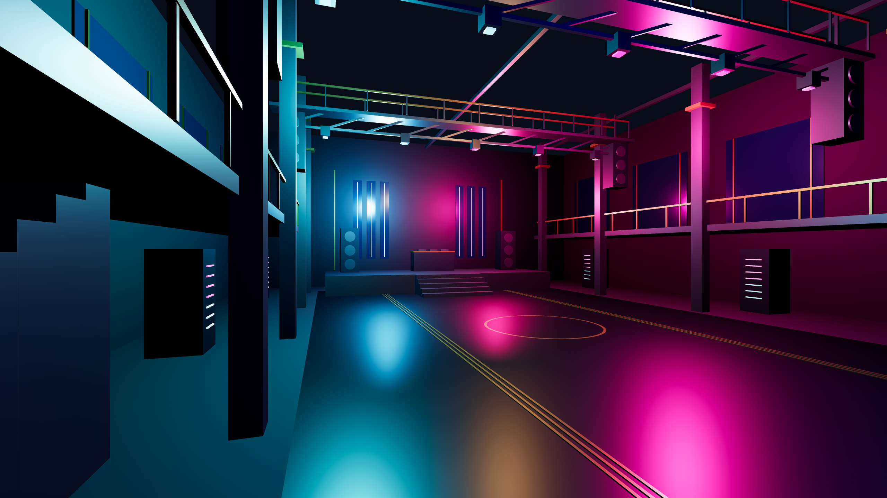
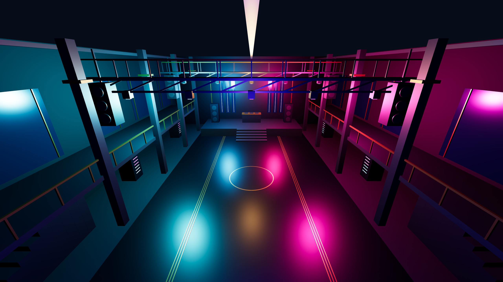
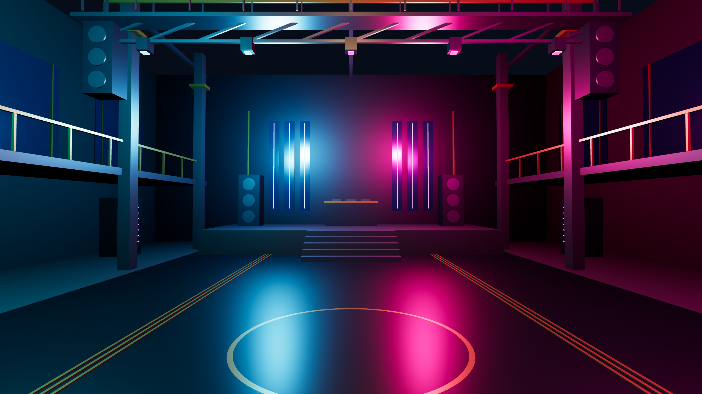
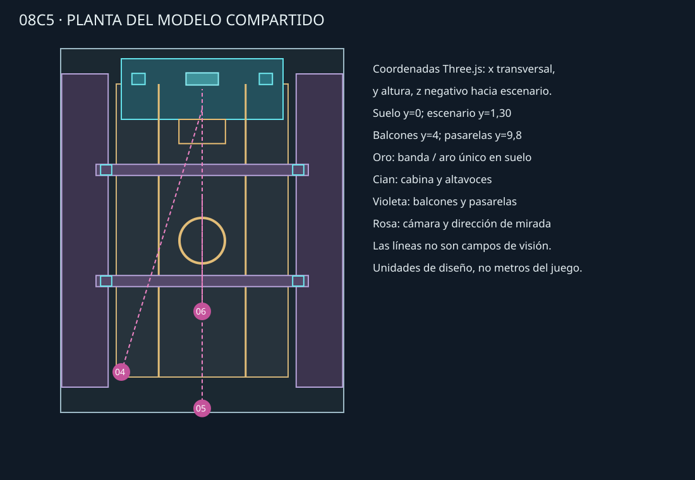

Propuesta técnica de referencia, no fondos finales ni aprobación artística. Los tres PNG son renderizados de un único modelo real y luces comunes, pero el acabado es simplificado y no alcanza el detalle artístico de 08C4.
Informe e instrucciones · Abrir y renderizar escena · Modelo editable GLB · Planta · Propuestas 08C4




Un único conjunto de 326 objetos de escena, materiales y luces. El modelo contiene una sola geometría de aro, centrada en la pista. Su función es decorativa y no existe plataforma ni descenso.
El archivo scene.js es la fuente editable autoritativa; el GLB permite abrir la geometría y cámaras en editores 3D compatibles. La iluminación hemisférica y niebla son propias del visor y no se exportan en GLB; para reproducir estos PNG usar la escena web.
Es un blockout iluminado: faltan sombras, detalle material, actividad, integración de sprite/logo y validación artística. No se ha reemplazado ni integrado recurso alguno.